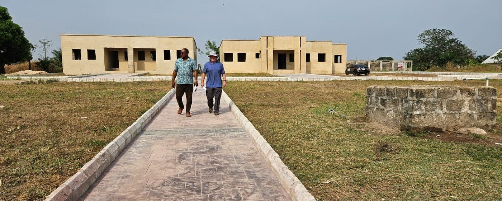
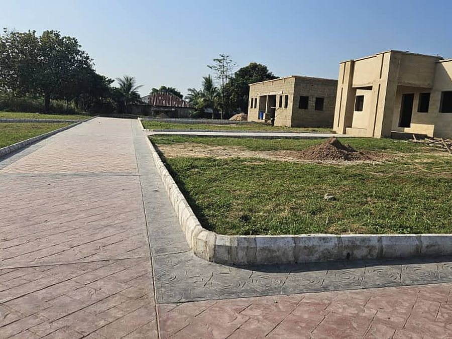

Our vision
A future where every child, especially the girl child in Africa, grows up healthy, educated and empowered to build a better life within their own community.


CORAfrica turns twenty in 2026. This plan sets out the first five years of the next twenty: four pillars, goals for 2027, 2029 and beyond, and targets for 2030 — with a place in each for the partners who will help us build it.
Our vision
A future where every child, especially the girl child in Africa, grows up healthy, educated and empowered to build a better life within their own community.
Our mission
To transform education and healthcare for indigent children by building Community Education Centres that combine schools, clinics, farms and skills centres to ensure that children stay within their communities.
Our twenty-year goal, 2026–2046
To scale Community Education Centres across Nigeria and Africa, creating a continent-wide child development ecosystem that delivers quality education, good health, practical skills, digital fluency and economic empowerment for rural families.
Pillar 1 · Education and e-learning

Pillar 1, under education · Agriculture, livelihoods and economic empowerment
These are part of the education programme, not a programme beside it. In a Community Education Centre, the farm, the school fees and the loan to a parent are what keep a child in school.
Pillar 2 · Healthcare and child well-being
Pillar 3 · Community infrastructure
Each new Community Education Centre is built for the whole community, not only for its pupils, and brings these eight parts together:
Pillar 4 · Governance, funding and global partnerships
Our targets for 2030
Over and above where we stand in 2026
And by 2030: digital learning built into every centre; solar power, water, sanitation and digital hubs installed; donor-grade compliance in full; and a global partnership network in place.
Where to start
Both come in the plan’s first years. Institutions that would like to fund one directly should talk to us.
Our next centre, recently begun in Nasarawa State, near Abuja. Its budget is being verified.
The detail → CostedA purpose-built skills centre, planned for our new Community Education Centre. US $320,000 builds one and runs its first year.
The detail →Alignment
The plan, like our programmes, is aligned to six United Nations Sustainable Development Goals.
Reducing poverty through education, and through micro-credit that lets a family build an income.
Clinics inside the school system, medical outreach to rural villages, and a focus on a child’s first 1,000 days.
Primary and secondary schools where none exist, with vocational and skills training built in.
Vocational training and support for small businesses that lead to dignified, sustainable livelihoods.
Reaching refugee, displaced and host communities together, without distinction.
Keeping girls in school through HELP-A-KID, and micro-credit that puts an income in women’s hands.
Why CORAfrica
A plan this size asks a funder to trust the organisation behind it. This is the record it rests on.
Founded in 2006. Since then 7,330 children have graduated from the schools we founded, 2,550 are enrolled in them today, and our programmes have reached 64 communities.
The Community Education Centre has been built twice, at Idum-Mbube and at Victoria-Ikom. Both work, and both pass in 2027 to the institutions that will run them, so what a partner builds with us outlasts us.
92.6% of everything CORAfrica spent in 2025 went to programmes, and our accounts are audited every year by Akomaye Adie & Co., Chartered Accountants, of Calabar. See where every naira went.
A 501(c)(3) in the United States since 2006 and an NGO in Nigeria since 2010, governed by a Board of Trustees in each, and reported on independently by Vanguard and ThisDay.
Partner with us
The plan depends on partners as much as on donors. If your institution would like to fund or deliver part of it, talk to us, and we will shape the partnership around the pillar you care about.
Co-fund Community Education Centres, and help carry the model into public policy.
Health, refugee and displacement work, where we have worked alongside UNHCR and Nigeria’s National Commission for Refugees, Migrants and IDPs.
Multi-year support for a pillar, a centre or a single programme.
Dioceses, parishes and African diaspora associations. The Catholic Diocese of Ogoja and parishes in Western Pennsylvania have long worked with us.
Sponsor a clinic, a digital classroom, a demonstration farm or a skills centre, as part of your social responsibility.
Research, training and teaching, and the tertiary institution the plan looks toward.